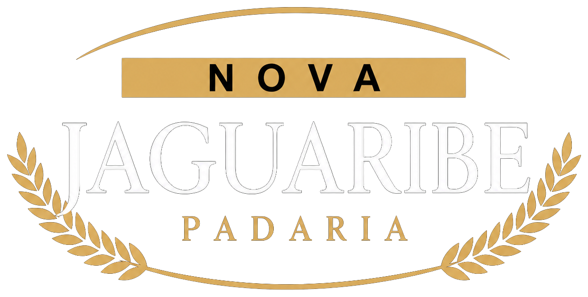

50+ANOS NO BRÁS
Tem coisas que
viram parte do bairro.
Há mais de 50 anos, a Nova Jaguaribe faz parte do Brás.
Um endereço para o café, para o almoço e para encontrar
os sabores que acompanham o dia a dia.

Fazer um pedidoHÁ MAIS DE 50 ANOS, NO CORAÇÃO DO BRÁS
Do primeiro café à última fatia.
A gente tem um lugar na sua rotina.
O café. O pão. O começo de tudo.
O café de sempre, a pausa para o almoço
ou aquela pizza para fechar o dia.
Há mais de 50 anos, a Nova Jaguaribe faz parte do Brás.
Um endereço para o café, para o almoço e para encontrar
os sabores que acompanham o dia a dia.
O MESMO ENDEREÇO. ONDE VOCÊ ESTIVER.
Faça seu pedido pelo WhatsApp ou telefone.
Consulte a área de entrega e as opções do dia.
Rua Piratininga, 456 — Brás
São Paulo · SP · 03042-000